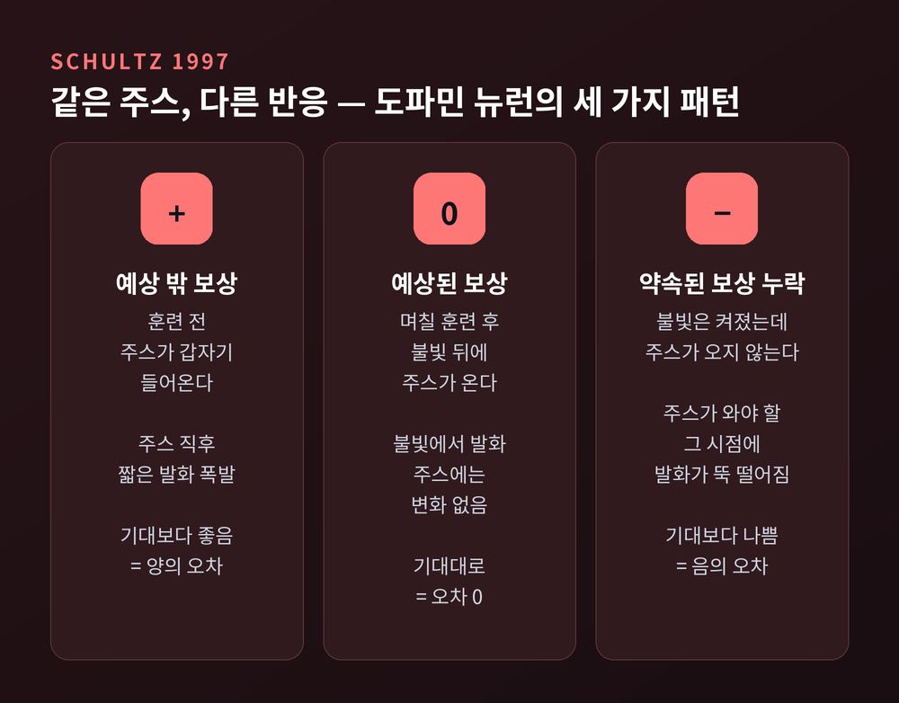
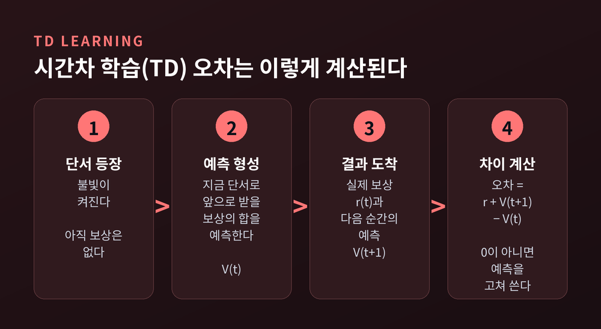
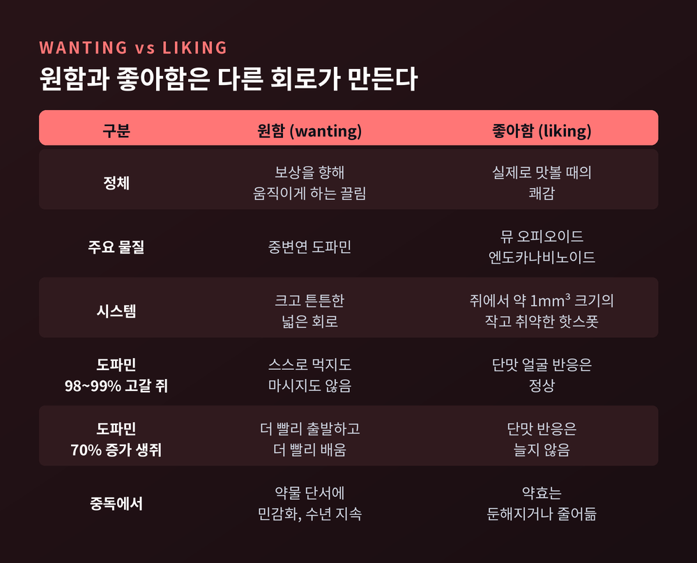
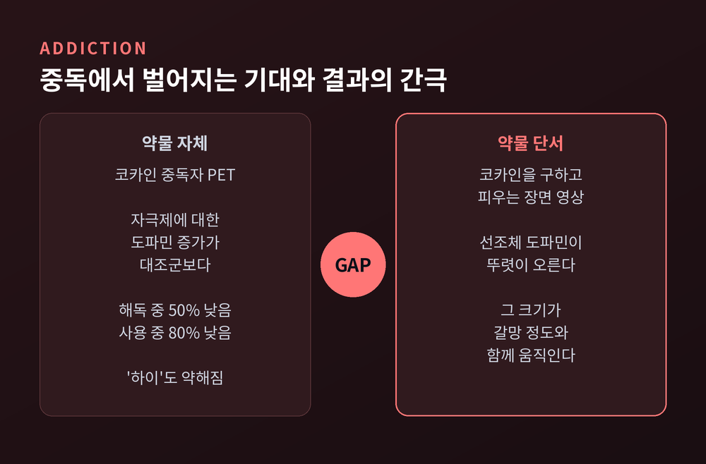
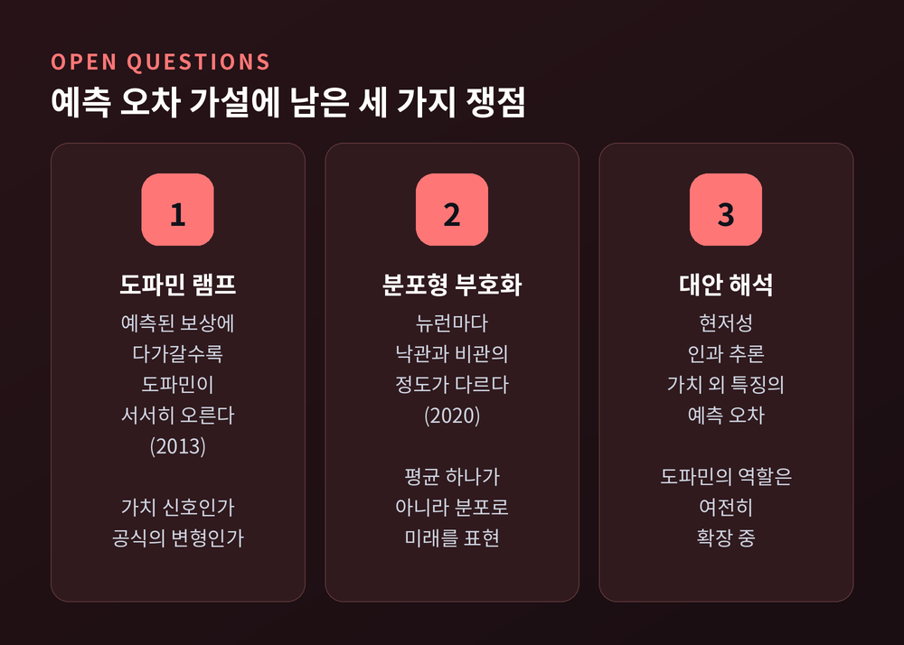

도파민 보상 예측 오차 원리 — 뇌는 쾌락보다 기대와의 차이에 반응한다
이번 글에서는 도파민이 '행복 물질'이라는 흔한 설명을 한 겹 벗겨 보려 합니다.
원숭이 실험에서 출발해 인공지능의 학습 공식, 그리고 중독까지 차례로 따라갑니다.
진단이나 치료에 관한 조언이 아니라 신경과학 원리를 정리한 글이라는 점을 먼저 밝혀 둡니다.
먼저 세 줄로 요약합니다.
- 중뇌 도파민 뉴런은 보상 자체보다 "예상보다 좋았는가, 나빴는가"라는 차이, 곧 보상 예측 오차에 반응합니다.
- 이 신호는 인공지능의 시간차 학습(TD) 공식과 거의 같은 모양이며, 뇌가 무엇을 배울지 정하는 교사 역할을 합니다.
- 도파민은 쾌락('좋아함')보다 갈망('원함')에 가깝습니다. 중독은 이 둘이 벌어지는 현상으로 설명되기도 합니다.

도파민 뉴런은 중뇌 깊숙한 두 곳에 모여 있습니다
보상과 관련된 도파민 뉴런은 뇌간 바로 위, 중뇌에 모여 있습니다.
하나는 복측피개영역(VTA), 다른 하나는 흑질입니다.
이 뉴런들은 긴 축삭을 뻗어 신호를 멀리 보냅니다.
도착지는 선조체, 측좌핵, 전두엽처럼 동기와 목표 행동을 다루는 곳입니다.
경로는 크게 셋으로 나뉩니다.
- 중변연계: VTA에서 측좌핵으로 갑니다. 약물 보상에서 특히 중요한 길입니다.
- 중선조체: 흑질에서 배측 선조체로 갑니다. 배측 선조체는 습관 학습과 관련이 깊습니다.
- 중피질: VTA에서 전두엽으로 갑니다.
지난 20년의 연구를 정리한 2026년 리뷰에 따르면, 예측 오차 패턴이 가장 뚜렷한 곳은 VTA에서 측좌핵으로 가는 중변연계 경로입니다.
슐츠의 원숭이는 주스보다 불빛에 반응했습니다
이야기는 스위스 프리부르대학의 볼프람 슐츠 연구실에서 시작됩니다.
연구진은 깨어 있는 원숭이의 도파민 뉴런 하나하나에 전극을 대고 활동을 기록했습니다.
처음 관찰은 단순했습니다.
입에 과일 주스가 한 방울 떨어지면 도파민 뉴런이 짧게 폭발하듯 발화했습니다. 이런 반응은 도파민 뉴런의 55~80%에서 나타났습니다.
공기 분사나 식염수 같은 불쾌한 자극에는 이런 폭발이 없었습니다.
흥미로운 일은 훈련 뒤에 일어났습니다.
원숭이에게 작은 불빛이 켜지면 레버를 만지고 주스를 받는 과제를 가르쳤습니다.
처음에는 주스가 들어올 때 뉴런이 발화했습니다.
며칠 훈련하자 주스에는 더 이상 반응하지 않았습니다. 대신 불빛이 켜지는 순간 발화했습니다.
더 놀라운 장면도 있었습니다.
불빛이 켜졌는데 주스가 오지 않자, 원래 주스가 와야 할 바로 그 시점에 발화가 평소보다 뚝 떨어졌습니다.
불빛 뒤 1초 넘게 아무 자극이 없었는데도 그랬습니다. 뇌가 보상이 언제 올지까지 기억하고 있었다는 뜻입니다.

1997년 슐츠는 피터 다얀, 리드 몬터규와 함께 이 결과를 《사이언스》에 정리했습니다.
결론은 세 줄의 규칙이었습니다.
- 기대보다 좋으면 발화가 늘어납니다.
- 기대만큼이면 아무 변화가 없습니다.
- 기대보다 나쁘면 발화가 줄어듭니다.
도파민 뉴런은 보상을 보고하는 것이 아니었습니다.
실제 보상과 예측의 차이, 곧 보상 예측 오차를 보고하고 있었습니다.
인공지능의 학습 공식과 같은 모양이었습니다
이 발견이 큰 반향을 일으킨 이유는 따로 있습니다.
공학자들이 이미 같은 계산을 쓰고 있었기 때문입니다.
리처드 서튼과 앤드루 바르토는 1980년대에 시간차 학습(TD)이라는 알고리즘을 내놓았습니다.
목표는 지금 보이는 단서로 앞으로 받을 보상의 합을 예측하는 것입니다.
핵심 식은 짧습니다.
δ = 지금 받은 보상 + 다음 순간의 예측 − 지금의 예측
이 δ가 TD 오차입니다.
모든 보상을 끝까지 기다리지 않아도 매 순간 계산할 수 있다는 점이 장점입니다.
예측이 맞으면 δ는 0이 되고, 더 배울 것이 없습니다.

슐츠 팀은 이 모델을 불빛-주스 과제에 그대로 돌려 보았습니다.
모델이 내놓는 오차 신호는 학습 과정 내내 실제 도파민 뉴런의 활동과 맞아떨어졌습니다.
신호가 보상에서 단서로 옮겨 가는 모습까지 같았습니다.
이 공식은 심리학의 오래된 수수께끼도 풀어 줍니다.
레온 카민이 쥐에게서 처음 보인 블로킹 현상입니다.
불빛이 먹이를 예고한다고 이미 배운 쥐에게 불빛과 소리를 함께 들려주고 먹이를 줍니다.
쥐는 소리에 대해 아무것도 배우지 않습니다. 먹이가 이미 완전히 예측되어 오차가 없기 때문입니다.
예전에는 가설이었고, 지금은 실험으로 확인된 사실입니다.
2013년 미국 연구진은 쥐의 VTA 도파민 뉴런을 빛으로 켜는 광유전학을 썼습니다.
보상이 주어지는 순간 인위적으로 도파민 신호를 더하자, 원래 막혀 있어야 할 학습이 일어났습니다.
예측 오차 신호가 학습의 원인이라는 직접 증거였습니다.
이후 연구는 신호를 더 정교하게 만들었습니다.
보상 확률을 달리하면 반응 크기가 확률에 맞춰 단계적으로 변했습니다(2003).
같은 양의 주스라도 2초, 4초, 8초, 16초로 늦게 준다고 알리면, 늦을수록 반응이 작아졌습니다. 도파민이 주관적 가치를 반영한다는 뜻입니다.
2015년에는 VTA 도파민 뉴런이 이웃 GABA 뉴런이 보내는 '기대' 신호를 빼서 오차를 계산한다는 회로 수준의 증거도 나왔습니다.
원하는 것과 좋아하는 것은 다른 회로입니다
여기까지 읽으면 도파민이 곧 쾌락이라고 생각하기 쉽습니다.
미시간대의 켄트 베리지와 테리 로빈슨은 여기에 선을 긋습니다.
보상에는 적어도 두 얼굴이 있다는 것입니다.
- 원함(wanting): 보상을 향해 움직이게 만드는 끌림입니다. 중변연 도파민을 포함한 크고 튼튼한 시스템이 만듭니다.
- 좋아함(liking): 실제로 맛보았을 때의 쾌감입니다. 작고 취약한 '쾌락 핫스폿'이 만들며, 도파민에 의존하지 않습니다.

근거가 되는 실험은 꽤 극적입니다.
측좌핵과 배측 선조체의 도파민을 98~99% 없앤 쥐는 스스로 먹지도 마시지도 않았습니다.
그런데 입에 단물을 넣어 주면 '맛있다'는 얼굴 반응은 정상으로 나왔습니다.
반대 방향 실험도 있습니다.
도파민 수송체를 정상의 10%만 남겨 시냅스 도파민이 70% 늘어난 생쥐입니다.
이 생쥐는 단 보상을 향해 더 빨리 출발했고, 더 적은 시행으로 길을 배웠습니다.
하지만 설탕 맛에 대한 '좋아함' 반응은 늘지 않았습니다.
쾌락을 칠하는 붓은 다른 곳에 있었습니다.
측좌핵과 복측 창백핵 등에 있는 핫스폿으로, 쥐에서는 각각 약 1세제곱밀리미터 크기입니다.
이곳의 뮤 오피오이드와 엔도카나비노이드를 자극하면 단맛에 대한 좋아함 반응이 2~3배로 커졌습니다.
다만 이 구분이 예측 오차 이론과 완전히 맞아떨어지지는 않습니다.
한쪽은 도파민을 학습의 교사 신호로, 다른 쪽은 끌림을 부여하는 신호로 봅니다.
두 해석을 잇는 계산 모델이 제안되어 있지만, 아직 정리가 끝난 논쟁은 아닙니다.
중독은 예측이 따라잡지 못하는 오차입니다
보상 예측 오차 원리로 보면 중독의 한 단면이 선명해집니다.
자연 보상은 반복될수록 예측됩니다.
예측되면 오차가 0이 되고, 도파민 폭발도 사라집니다. 배움이 멈추는 셈입니다.
약물은 사정이 다릅니다.
코카인은 도파민 수송체를 막고, 암페타민은 도파민을 쏟아내게 하며, 니코틴은 VTA 도파민 뉴런을 직접 켭니다.
2004년 데이비드 레디시는 이렇게 설명했습니다. 약물은 도파민을 약리적으로 직접 올리므로, 아무리 익숙해져도 그 오차가 예측으로 상쇄되지 않는다는 것입니다.
그 결과 약물로 가는 행동의 가치가 끝없이 부풀어 오릅니다.
사람 뇌 영상은 이야기를 한 단계 더 복잡하게 만듭니다.
노라 볼코우 연구팀의 PET 연구에서 코카인 중독자에게 비슷한 자극제를 주자, 도파민 증가는 대조군보다 해독 중인 사람에서 50%, 현재 사용 중인 사람에서 80% 낮았습니다.
약효는 둔해졌는데, 코카인을 구하고 피우는 장면이 담긴 영상에는 선조체 도파민이 뚜렷이 올랐습니다. 그 크기는 갈망 정도와 함께 움직였습니다.

연구진은 이 간극을 주목합니다.
단서가 만든 큰 기대와 둔해진 실제 효과 사이의 차이가, 기대한 보상을 찾아 계속 복용하게 만든다는 가설입니다.
로빈슨과 베리지의 유인 민감화 이론도 같은 방향을 가리킵니다. 약물이 '원함' 시스템을 민감하게 만들어, 좋아함이 줄어도 원함은 수개월에서 수년까지 남는다는 것입니다.
그렇다고 약물에 노출되면 누구나 중독되는 것은 아닙니다.
헤로인을 시도한 사람 중 중독에 이르는 비율은 25~40%로 보고됩니다.
통증 때문에 오피오이드를 처방받은 사람 중 문제적 사용으로 이어지는 경우는 4% 미만입니다.
유전이 위험의 약 절반을 설명하고, 청소년기와 스트레스 같은 환경도 영향을 줍니다.
아직 풀리지 않은 부분도 있습니다
보상 예측 오차 가설은 신경과학에서 가장 영향력 있는 아이디어 중 하나입니다.
그래도 모든 것을 설명하지는 못합니다.
2013년에는 완전히 예측된 보상에 다가갈수록 측좌핵 도파민이 서서히 올라가는 현상이 보고되었습니다.
고전적 공식대로라면 일어나지 않아야 할 일입니다.
이것이 가치나 동기 신호라는 해석과, 공식을 조금 고치면 설명된다는 해석이 지금도 맞서고 있습니다.
2020년에는 도파민 뉴런마다 낙관적이거나 비관적인 정도가 달라, 뇌가 미래 보상을 평균값 하나가 아니라 분포로 표현할 수 있다는 결과도 나왔습니다.
도파민이 현저성이나 인과 관계를 부호화한다는 제안도 이어지고 있습니다.

정리하면 이렇습니다.
도파민은 기쁨을 주는 물질이라기보다, 세상이 예상과 얼마나 다른지 알려 주는 신호입니다.
예상보다 좋으면 배우고, 예상대로면 조용하고, 예상보다 나쁘면 고칩니다.
그 신호가 약물처럼 끝없이 켜지면 원함은 커지고, 좋아함은 제자리이거나 오히려 줄어듭니다.
"뇌는 쾌락이 아니라 기대와의 차이를 배운다."
같은 커피가 매일 아침 조금씩 덜 반가운 이유도 여기서 찾을 수 있을 것입니다.
그렇다면 익숙해진 즐거움은 사라진 것일까요. 저는 뇌가 그만큼 세상을 잘 알게 되었다는 뜻으로 읽고 싶습니다.
※ 이 글은 신경과학 원리를 설명하기 위한 것으로 의학적 진단이나 치료를 대신하지 않습니다. 중독이나 기분 문제로 어려움이 있다면 정신건강의학과 전문의나 전문 상담 기관의 도움을 받으시기 바랍니다.